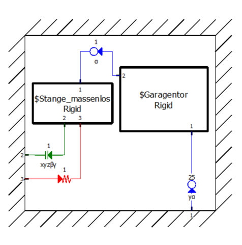
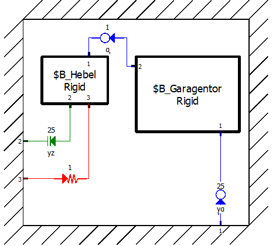
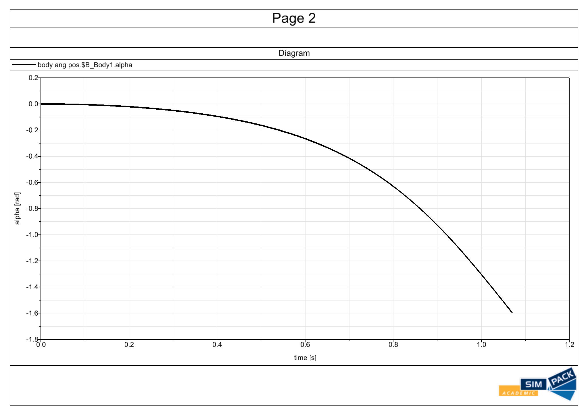
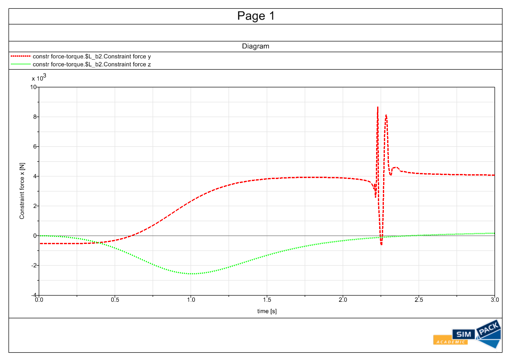

Project · Multibody System Dynamics
Garage Door Multibody Dynamics
Lagrange mechanics · MATLAB ode45 · SIMPACK · reaction-force analysis
The assignment was to determine the motion of a garage door that slides horizontally at one end, is connected to a rotating lever at the other end, and is assisted by a spring. The door starts from rest, and the motion had to be evaluated for several spring constants, including the optimal value where the door just reaches the vertical position with zero velocity.
I first derived the missing geometry from the given mechanism layout, including the spring anchor position, relaxed spring length, and the optimal spring stiffness from an energy balance. I then used the door angle as the generalized coordinate, expressed the lever angle and sliding constraint in terms of it, and derived the nonlinear equation of motion with Lagrange equations of the second kind.
The analytical model was implemented in MATLAB and solved numerically with ode45. After the trajectory was known, I recovered the bearing and joint forces at the sliding support, door-lever joint, lever bearing, and spring anchor using center-of-mass acceleration, angular acceleration, force balances, and moment balance.
In parallel, I built the same system in SIMPACK: the garage door as a rigid body with planar rotation and horizontal sliding, the lever as a nearly massless rigid body, the spring as a force element, and constrained joints for the supports. I compared MATLAB and SIMPACK results for angle, angular velocity, position, and bearing forces across different spring stiffnesses.



